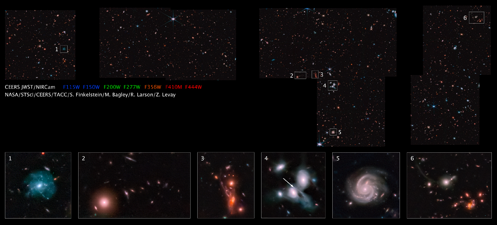

CEERS Epoch 1: Color Images Release
JWST has taken the first epoch of observations for our CEERS Survey and it is currently the largest image taken by the telescope to date! These data include NIRCam and MIRI imaging, covering near-infrared to mid-infrared wavelengths in the EGS field - a small patch of sky near the handle of the Big Dipper. We have produced a color image mosaic of all of our Epoch 1 data, which we share below, with several highlights and additional information. Epoch 1 covers less than half of our total survey area on the sky and already the images have led to new discoveries and an unexpected, but not unwelcome, abundance of never-before-seen galaxies. We hope you enjoy exploring these images as much as we have enjoyed studying them, and be sure to open the high-resolution ones to zoom in - the sheer number of galaxies we have captured so far is awe-inspiring!
Table of Contents:
We ask that reporters looking to use these images (and the higher-resolution ones linked in buttons below) follow these captioning and credits guidelines (linked here).
Above: Image of CEERS scientist looking at the Epoch 1 NIRCam color mosaic in TACC's visualization lab at UT Austin. Credit: R. Larson
Click on the image to zoom in and explore!
Above we share the CEERS Epoch 1 color mosaic which consists of 690 individual frames taken with the Near Infrared Camera (NIRCam) on JWST. This image covers an area of sky about eight times as large as JWST’s First Deep Field Image released on July 12 - and is the largest galaxy survey image to date! Epoch 1 contains the 4 of our 10 total planned images that were taken with NIRCam in June of 2022 with the remaining observations scheduled for December 2022.
We encourage you to view the medium- & higher-resolution versions of this image by clicking on the buttons below. But heads up -- for the higher-resolution version, we recommend that you do this on a computer/laptop, as this file is very large!
Let's look at some cosmic objects!

Here we highlight some of our favorite parts of the CEERS NIRCam image where the six inset boxes zoom in on some objects of interest which we describe below:
- A spiral galaxy at a redshift of z = 0.16. The resolution of the JWST imaging reveals a large number of blue star-forming clumps and star clusters.
- A chance alignment of a bright galaxy at a redshift z = 1.05 with several smaller galaxies forming an arc in the sky when viewed from JWST.
- An interacting system of galaxies at z = 1.4, dubbed the “Space Kraken” by the CEERS team.
- Two interacting spiral galaxies at z = 0.7. The arrow points to a supernovae discovered with these JWST images.
- Another spiral galaxy, also at z = 0.7, again highlighting JWST’s ability to resolve small-scale features even for modestly distant galaxies.
- A chance alignment of a z = 0.63 galaxy with a tidal tail, and a grouping of red galaxies at z = 1.85
We encourage you to view the medium- & higher-resolution versions of this image by clicking on the buttons below. But heads up -- for the higher-resolution version, we recommend that you do this on a computer/laptop, as this file is very large!
A detection of one of the most distant galaxies ever found
Scientists in the CEERS Collaboration have identified an object -- dubbed Maisie’s galaxy in honor of project head Steven Finkelstein’s daughter -- that may be one of the earliest galaxies ever observed. If Maisie's galaxy is confirmed to be at a redshift greater than 11.8, with future observations, that would mean that we're seeing this galaxy as it was less than 400 million years after the Big Bang.
We encourage you to view the medium- & higher-resolution versions of this image by clicking on the buttons below. But heads up -- for the higher-resolution version, we recommend that you do this on a computer/laptop, as this file is very large!
In addition, if you'd like to read the science article about Maisie's Galaxy, click on the button below.
Click on the image to zoom in and explore!
Above shows one color image pointing taken with the Mid-Infrared Instrument (MIRI) on the JWST from a patch of sky near the handle of the Big Dipper. This is one of the first images obtained by the Cosmic Evolution Early Release Science Survey (CEERS) collaboration.
We encourage you to view the medium- & higher-resolution versions of this image by clicking on the buttons below. But heads up -- for the higher-resolution version, we recommend that you do this on a computer/laptop, as this file is very large!
JWST has unprecendented mid-infrared resolution
Above shows a comparison of a particular portion of the CEERS MIRI image (center) that has previously been imaged by the Spitzer Space Telescope (left & right). The improvement in resolution and sensitivity with the JWST data is significant, highlighting details we can begin to uncover – details which were previously challenging or impossible to distinguish.
What does Epoch 1 mean?
The JWST observations for CEERS will be split into two epochs: Epoch 1 observations of some of our NIRCam and MIRI pointings occured in June, while the rest of the program will be completed closer to December.
The image above shows the footprint of the full CEERS program (left) and the data taken for Epoch 1 (right). If you look back at the NIRCam image above, you can see the data show the same shape as the purple squares in the Epoch 1 panel (right)!


{kind=link}
{kind=link}
{kind=link}